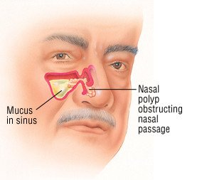

Nasal polyps

CAUSES
Polyps develop because the mucous membranes lining the nose or sinuses change. The membranes become inflamed for a long time or become inflamed over and over again. The inflammation features swelling, redness and fluid buildup.
Researchers believe that allergies and infections cause the inflammation. They think that because they’ve studied tissue taken from nasal polyps. Those samples contained extra eosinophils, white blood cells linked to infections and allergic reactions. The evidence points to inflammation causing small growths filled with fluid. Those growths then turn into polyps.
SYMPTOMS
Small polyps may not cause any symptoms. But as they grow, they may lead to:
- Headaches.
-
Loss of smell or taste.
-
Nasal congestion (stuffy nose).
-
Nasal drainage (runny nose).
-
Nosebleeds.
-
Postnasal drip (constantly feeling like you have to clear your throat).
-
Pressure or pain in the sinuses, face or top teeth.
-
Snoring.
DIAGNOSIS
If you have symptoms of nasal polyps, talk to a healthcare provider. To diagnose nasal polyps, the healthcare provider may:
- Ask about your health history, especially allergies, infections and asthma.
-
Ask you about your symptoms and how long you’ve had them.
-
Look inside your nose with a nasal endoscope (thin, flexible tube with a tiny camera and light).
-
Order a CT scan to take detailed pictures inside your sinuses.
TREATMENTS
Not all patients can be cured of nasal polyps, but several treatments can help:
- Steroid sprays to shrink polyps and improve symptoms.
-
Oral steroids (pills you swallow).
-
Injections (shots) under the skin to deliver a medicine called dupilumab.
-
Outpatient (no overnight stay) surgery to place a tiny stent. It props open the nasal passages and delivers steroids or other medications.
-
Outpatient surgery using endoscopy to remove polyps when other treatments don’t work.